Welcome to My Guide on How to Bake Beautiful Sourdough Bread
Discover the art of making delicious sourdough bread at home. From starter to loaf, I've got you covered!
Basic Sourdough Recipe
Ingredients
- 500g bread flour
- 375g warm water
- 100g sourdough starter
- 10g salt
Step By Step
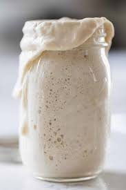
Feed Starter. Remove starter from fridge, and add 1 part starter, 2 parts water, and 2 parts flour (1:2:2 ratio). Allow to rise on the counter at room temperature for ~8 hours or once doubled in size.
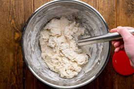
Combine Ingredients. Once active and bubbly (doubled in size), pour 100g into a mixing bowl, then add 375g warm water and stir. Add 500g flour and 10g salt and mix until a shaggy dough is formed.
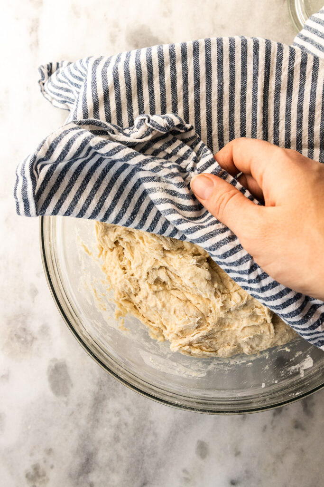
Cover and Rest. Cover with a damp kitchen towel and let rest for 30 minutes.
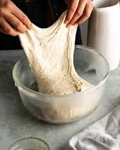
Stretch and Fold. After 30 minutes, stretch and fold the dough. Gently grab one side and pull upwards, folding the dough over itself towards the middle. Repeat until a rough ball is formed (about 5 stretches and folds). Perform stretch and folds once every 30 minutes, 2-4 times.
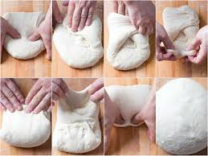
Bulk Rise and Shape. After stretching and folding, allow to bulk rise on the counter for 8-12 hours. Once the dough has doubled in size, place it onto a lightly floured surface and shape. Using a bench scraper or your hands, push the dough forward and pull back towards yourself, rotating until a ball is formed.
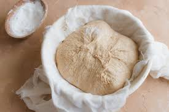
Rest. Place the shaped dough into a floured proofing basket seam side up. Stitch the seam closed. Rest on the counter for 30 minutes.
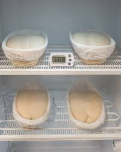
Proof. After 30 minutes, place in fridge and allow to proof for 2-24 hours (this helps the dough hold its shape).
Preheat. When you’re ready to bake, place your Dutch oven into the oven, and preheat to 550°F.
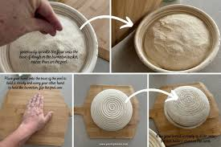
Prepare. While the oven is preheating, remove your dough from the fridge. Cut a piece of parchment paper to fit your Dutch oven, and lightly flour. Invert the proofing basket to release the dough onto the parchment paper.
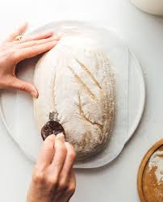
Score. Flour the top of your dough, and using a razor blade, score the dough however you wish. It is important to make a 1/4 inch deep expansion score to ensure the dough doesn’t fuse back together and burst in random spots.
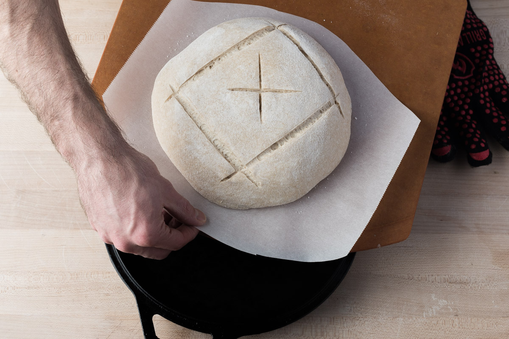
Place Dough In Dutch Oven. Once preheated, remove your Dutch oven from the oven, lower the oven temperature to 450ºF, and place your prepared dough into the Dutch oven.
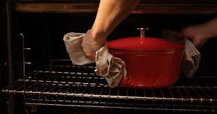
Bake With Lid On. Place the lid on your Dutch oven and bake in the oven for 30 minutes.
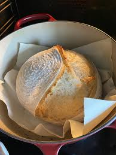
Bake With Lid Off. After 30 minutes, lower the oven temperature to 400ºF and remove the lid. Bake for 10-15 minutes or until the crust is golden.
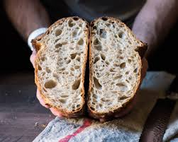
Enjoy. Remove from the oven and cool your loaf for at least 1 hour before slicing. For optimal enjoyment, toast a slice, spread with butter, and drizzle on some honey!
Expert Tips
- Use high-quality flour for better flavor and texture.
- Experiment with different hydration levels to find your perfect dough consistency.
- Don't rush the fermentation process; let the dough rise slowly for optimal flavor development.
- Invest in a good quality Dutch oven for professional-looking crusts.